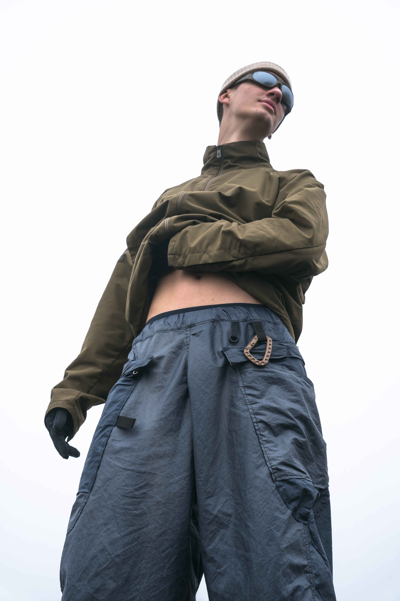
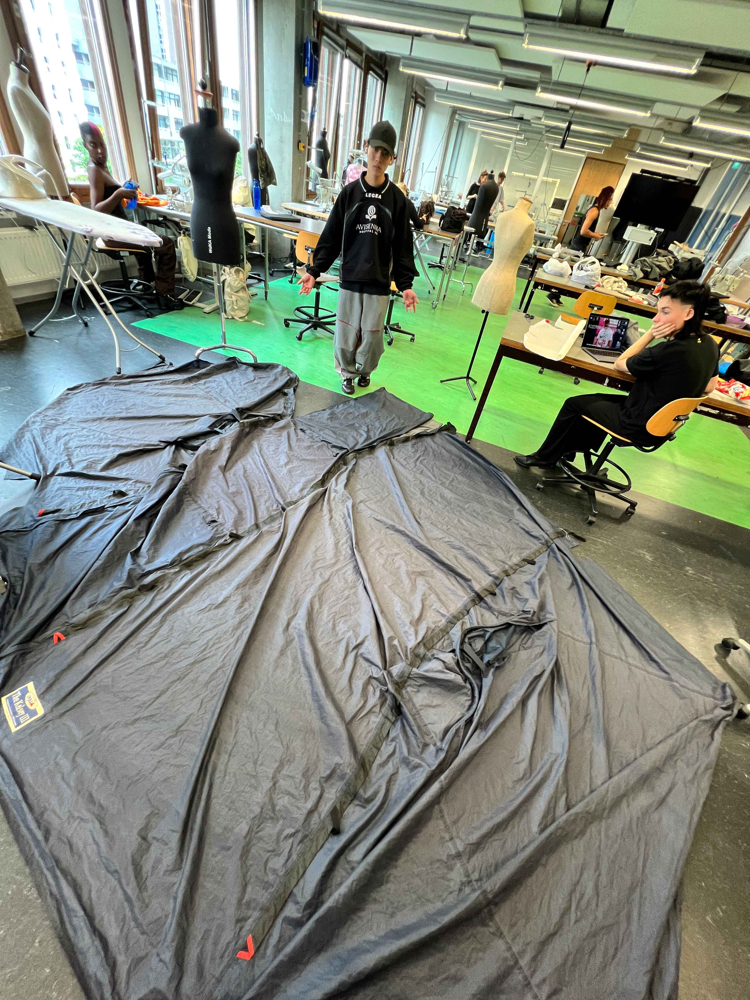

UPCYCLED - Tent pants
IN PROGRESS...
>ripstop fabric faded out by the sun
>tent parts that create multiple pockets and zippers
While exploring local hiking stores, I stumbled upon a recycling bin for old hiking gear, in one of them. This sparked an idea of creating functional garments only from this source, without buying newly manufactured fabrics. The benefits of using an old tent cover as a source of material bring you into a pure exploratory state, where you use not just the fabric from the old tent but also hardware that comes with it, such as zippers, ropes, buckles, and straps. The material guides the construction of the garment instead of your sketchbook and patterns. This design process surprised me in many ways and showed me how important it is to explore materials and focus on details.

